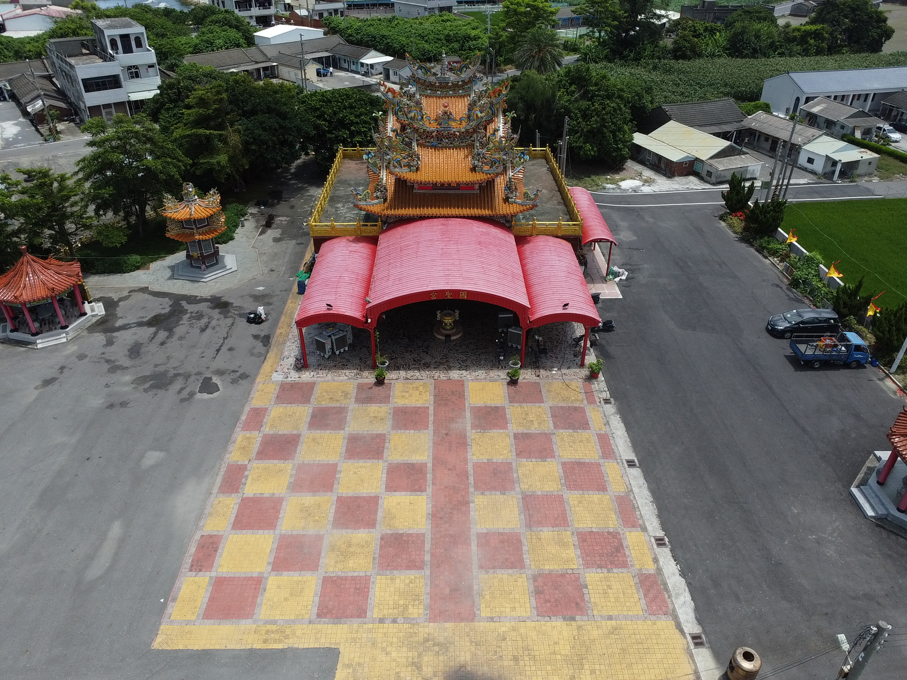

開臺聖王聖誕千秋
本宮年度最隆重之聖誕慶典，舉行三獻祝壽大典、酬神戲曲與平安福宴，十方善信齊聚牛厝恭祝聖王公萬壽無疆。

座落於台灣西海岸台西海口要衝，主祀開臺聖王（延平郡王鄭成功）。
數百年來庇佑漁農豐收、海疆平安，凝聚牛厝庄民世代虔誠香火。
延平郡王 ・ 國姓爺公
忠義千秋 ・ 護國佑民
雲林縣台西鄉牛厝村地處沿海，早期先民渡海來台拓墾時，面對風浪險惡與拓荒艱辛，恭請「開臺聖王」（延平郡王鄭成功，民間尊稱國姓公）金身渡海護航。因聖王公靈驗顯赫、屢次消災解厄，遂成為牛厝聚落最重要的精神支柱與庄頭守護神。
國聖宮自草創建廟以來，歷經地方仕紳與十方善信多次集資重修，廟貌巍峨莊嚴。神威遠播不僅庇佑沿海漁民出海滿載而歸、農作五穀豐登，更吸引各地分靈與信眾前來進香謁祖。
本宮年度最隆重之聖誕慶典，舉行三獻祝壽大典、酬神戲曲與平安福宴，十方善信齊聚牛厝恭祝聖王公萬壽無疆。
依循沿海傳統科儀舉辦贊普法會，超薦十方孤魂、祈求海陸平安，展現牛厝庄民敬天愛人、慈悲濟世的民俗精神。